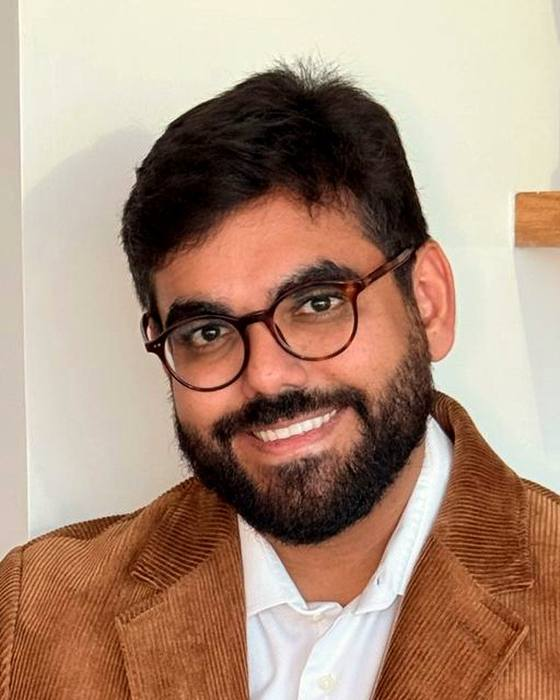
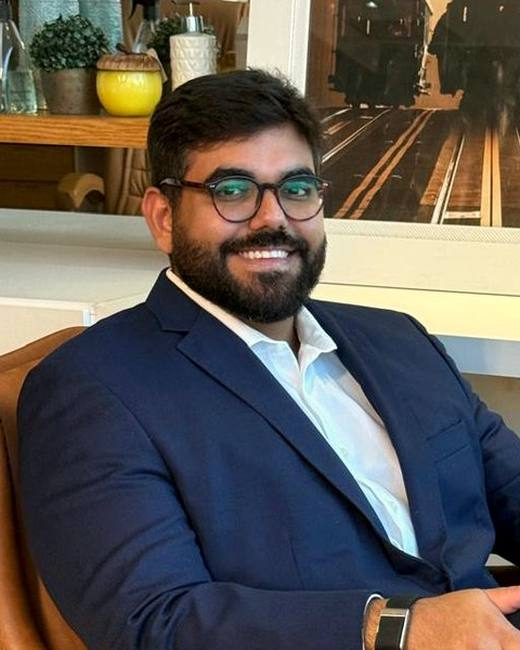

Você trabalha muitoe quer chegar aos60 anos aindatreinando.
Eu atendo à noite e aos sábados, porque é quando a maioria dos meus pacientes consegue sair do trabalho. Antes de pedir qualquer exame, quero ouvir como é o seu dia de verdade.

Gente que cuida de tudo e deixa a própria saúde por último
Quase sempre é alguém que está funcionando, só que no limite. Resolve o dia inteiro, chega em casa às 20h e ainda quer ter disposição para a família.
Executivos e empresários
Reunião atrás de reunião, almoço no carro, sono curto. O corpo vai cobrando aos poucos e a pessoa só percebe quando o rendimento cai.
Atletas amadores
Corrida, tênis, musculação. Treina sério, mas parou de evoluir ou está levando dias para se recuperar de um treino que antes era tranquilo.
Quem quer se antecipar
Está bem hoje e prefere olhar com calma agora do que descobrir alguma coisa daqui a dez anos.
Frases que eu escuto no consultório
Se alguma delas parece sua, vale a gente conversar.
- Durmo sete horas e acordo cansado.
- Lá pelas três da tarde a minha cabeça desliga.
- Treino há anos e a barriga não sai.
- Meus exames deram normais, mas eu sei que não estou bem.
- Antes eu me recuperava de um jogo em um dia. Agora levo três.
Método ALTA
É como eu chamo a forma de conduzir cada acompanhamento. Cada plano parte da sua rotina, e não de um protocolo pronto.
Na prática, ele aparece em quatro coisas que você vai sentir desde a primeira consulta.
Escutar sem pressa
A consulta começa pela sua rotina, não pelo exame. Horário de acordar, reunião, treino, o que você come no meio do dia.
Ver o quadro inteiro
Sono ruim, cansaço e peso que não sai costumam estar ligados. Eu olho para tudo junto antes de decidir qualquer coisa.
Medir o que importa
Composição corporal, força da mão no dinamômetro e os exames que fazem sentido para o seu caso.
Acompanhar
O plano é revisto com você no ritmo que o seu caso pede, conforme a sua necessidade e o que você quer para a própria saúde.
Como é a consulta
A consulta on-line segue o mesmo roteiro da presencial. Só muda o lugar onde você está.
Escuto sua rotina
Trabalho, sono, treino, alimentação e casa. Quero entender o seu dia antes de olhar para qualquer exame.
Avalio e meço
Examino você, meço a força da sua mão com dinamômetro e peço só os exames que fazem sentido para o seu caso.
Plano por escrito
Você sai com as orientações escritas, pensadas para a agenda que você tem, e não para a agenda ideal.
Acompanhamento individualizado
O acompanhamento é individualizado, conforme a necessidade de cada paciente e o que ele deseja para a própria saúde.
Presencial em Vitória ou on-line, de onde você estiver.

Luiz Felipe Farias
Sempre estudei hormônio, músculo e esporte. A vida me levou por outro caminho por um tempo e eu me acomodei. Há pouco senti no coração que precisava voltar para o que eu amo, e foi assim que nasceu o consultório.
Hoje acompanho pessoas que exigem muito de si no trabalho, no treino e em casa. Gosto de ouvir com calma e de explicar o porquê de cada conduta. Eu também acordo cedo, treino antes do trabalho e conheço de perto a rotina de quem não tem tempo sobrando.
Endereço e horários
Consultório
Av. Nossa Senhora dos Navegantes, 755
Ed. Palácio da Praia, sala 803
Enseada do Suá, Vitória-ES
CEP 29050-335
Horários
Segunda a sexta, das 19h às 22h30
Sábado, das 9h às 15h
Consulta on-line nos mesmos horários.
Dúvidas que recebo
Atendo. A consulta on-line segue o mesmo roteiro da presencial: conversa sobre a sua rotina, avaliação, exames direcionados e plano por escrito.
Começo ouvindo sobre o seu trabalho, sono, treino e alimentação. Depois avalio o quadro completo, peço só os exames necessários e montamos juntos o plano. Eu acompanho você até 45 dias depois da consulta.
A consulta inclui a avaliação completa e o acompanhamento até 45 dias depois dela. O plano de acompanhamento é para quem quer um cuidado mais próximo ao longo dos meses, com consultas e retornos programados.
Traga os que você tiver, de qualquer data. Exame novo eu só peço depois de ouvir você.
Porque é o horário em que quem trabalha o dia inteiro consegue vir sem desmarcar reunião.
Mande uma mensagem.Meu time responde.
Conte em poucas palavras o que está incomodando e a gente encontra o melhor horário para você.
Agendar pelo WhatsApp